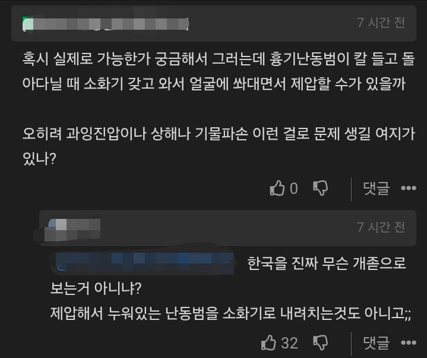
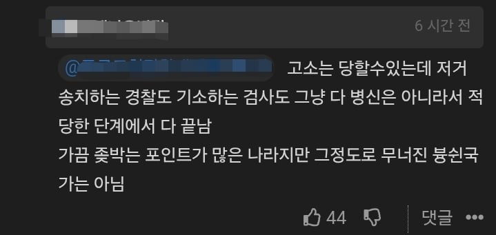
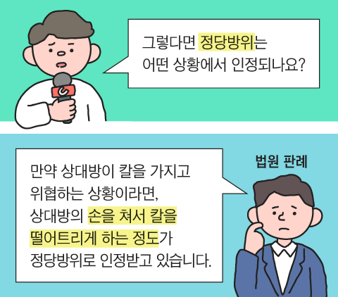
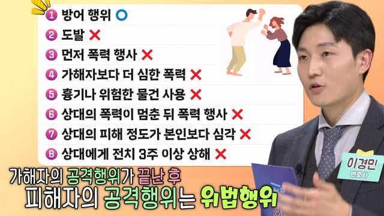
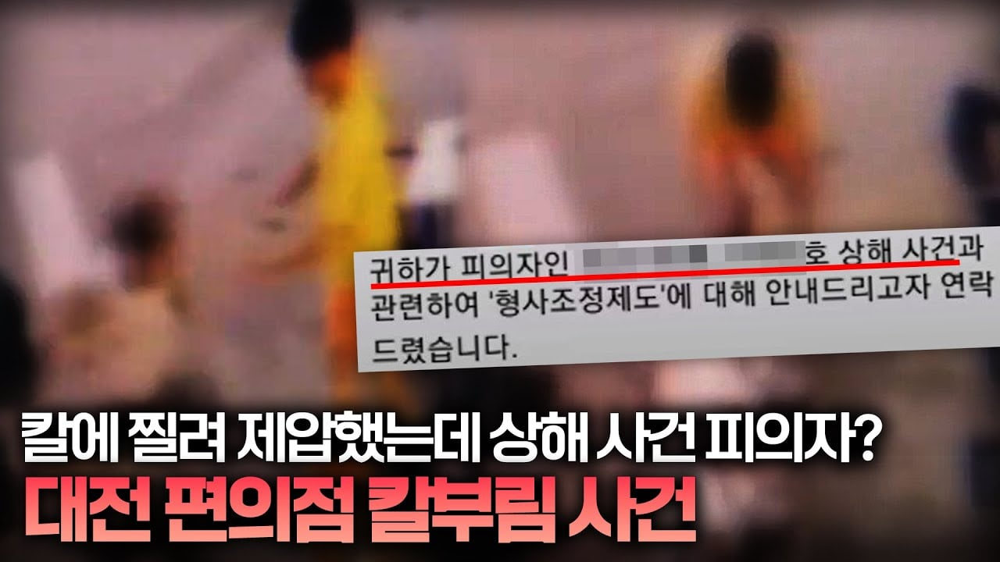

https://www.dogdrip.net/729471872
댓글 중 정당방위 관련 댓글이 있길래 찾아봄 ㅋㅋㅋ



개졷 븅쉰국가 맞네염 ㅋㅋ
막고!


https://www.dogdrip.net/729471872
댓글 중 정당방위 관련 댓글이 있길래 찾아봄 ㅋㅋㅋ



개졷 븅쉰국가 맞네염 ㅋㅋ
막고!
빈틈이 보여서 턱 몇방 돌리는거지
제압하고나서 기절할때까지 개패라는말이 아니라
정당방위가 빡쎈 이유는 역설적으로 우리나라가 치안이 좋아서 그럼.
정당방위가 널널한 국가들은 반대로 공권력에 따른 구제보다는 자력구제의 필요성이 더 강하기때문에 그렇고.
우리나라도 총기난사범들이 날뛰고 칼들고 날뛰는 사람들이 많아지면 정당방위가 존나 널널해질거임.
그리고 본문은 댓글을 전혀 이해하지못한것같은데
고소나 고발은 누구나 다 가능한거고
경찰이든 검찰이든 고소고발 들어오면 조사를 해야하는것도 마찬가지인데
극단적인 사례를 제외하고서는 대부분은 댓글에서 말한것처럼 알아서 경찰이나 검찰에서 ㅈ까지 마쇼 하고 법원으로 보내지도 않는다는건데 요건 백날 따져봤자 뭐함.
본인이 가져온 대전편의점 칼부림사건도 경찰은 송치했어도 검찰은 기소유예로 불기소처분했다고 한 사건이고
(https://news.kbs.co.kr/news/pc/view/view.do?ncd=7762841)
다른 개붕이가 말한 나나 사건도 븅신같은 강도새끼가 역고소 했어도 경찰이 응 ㅈ까 하고 검찰에 불송치한거고
본문에 다른 개붕이가 말한 내용이 하나도 틀린게 없는데 대체 무슨근거로 졷병신국가라고 하는지 이해를 못하겠네
걍 어줍잖게 알고있는걸로 일침 놓고싶으니깐 그런거지
제대로 알아보지고 않고 좋다구나 가져오는거보면 ㅈ병신인게 딱 견적 나오잖아
정당방위 인정 기소유예라고 해서 이게 뭔 소린가 했는데, 한 명은 정당방위 인정으로 아예 무혐의 처분이고 한 명은 기소유예였구나
너한테 말하는건 아닌데 댓글들 보면 우리나라에 개인이 총기를 소지하는게 허용이 되어야한다고 생각하나봄
자의로 총으로 정의구현해야 세상의 정의가 이루어지지
맨날 미국이었으면 어쩌고 하는데 대부분의 상황은 미국에서도 유죄 나온다는걸 가져와도 맨날 똑같은 소리 한다는거임 ㅋㅋㅋ
맨날 조사만 한다, 형식적인거다 언플하는게 맞는거냐??
그러다
실제로 신고당하면 괜찮다 확인되면 무죄다.
실제로 기소되면 괜찮다 확인되면 무죄다.
실제로 공소되면 괜찮다 확인되면 무죄다.
처응부터 강력한 권한으로 문제없습니다 해줘야지
정당방위를 무슨 도박하듯이 해버리니 다들 도망가지.
이번 칼부림 사건도 무차별난도사건이고 cctv공개되니 의자로 막은 선인이고 그냥 넘어가지.
만약 피해자도 없고 언론도 안탔는데 의자 들고 던지면서 자력구제 했다??? 바로 연차4일정도 날아간다.
나도 처벌 수위가 아닌 이 시스템에 담가진다는거 자체가 문제라고 생각함
왜 내가 시발 칼 휘두르는 새끼 때문에 조사를 받고, 송치돼서 몇달동안 불안감에 시달리며 기소/불기소 처분을 굴린 주사위 몇 나오는지 지켜보는 것마냥 기다려야하냐고ㅋㅋㅋㅋ
이건 되게 결과론적인 관점 - 정말 정당방위로 인정받을 만한 상황이란걸 너도 알고 나도 알고 있을때나 억울한거고 문제없다 생각할 수 있는 관점인거고
정당방위라고 주장하는 사람들이 모두가 정당방위가 아닐 수 있으니까 당연히 조사받아야하는거 아니겠음?
맨날 정당방위가 잘못된 제도라고 들고오는 도둑뇌사사건 - 침에 들어온 도둑을 빨래건조대로 몇대 때렸다가 뇌사에 빠졌다카더라 라고 잘못알려진 사건같은 경우에도
건장한 20대 청년이 왜소한 체격의 55세 도둑이 제압한 직후, 무차별로 폭행을 가한 다음에 기절한것까지 보고 벨트풀어서 두들겨팬 경우라서 정당방위로 인정을 못받은 케이스임.
이걸 도둑이 집에 처들어와서 나는 정당방위로 그냥 때렸을뿐이다 라고 주장하면 조사도 안하고 부르지도 않고 그냥 넘어갈 수 있을까?
치안조직이나 수사기관에서는 당연히 해야할 일을 그냥 피의자 말만 듣고 정당방위였어요? 아 그럼 그냥 가세요 할 수 있을것같음?
무조건 해달라는게 아님.
Cctv도 있고 명확한 증거가 있다면 초기에 확정을 해달라는거지.
분쟁의 여지가 있는 정당방위는 절차가 필요해. 하지만 일방적이고 명확할 때도 있잖아.
경찰,검찰.재판으로 토스토스토스가 일어나고 있는데 평범한 직장인들이 리스크를 감수하는 사회가 맞다고 생각해??
보통 cctv 있고 명확한 증거가 있으면 경찰이 확인하고 알아서 좆까 하는데
그 cctv랑 명확한 증거는 뭐 사건 벌어지면 하늘에서 뚝 떨어지냐 그것도 당연히 절차 밟아서 조사해야 나오는건데
일방적이고 명확한 케이스는 극히 드물뿐더러, 이번 인천 구월 칼부림 사태때나 같이 화제가 되어서 알아서 셀프조사 하고 목격자가 누구나 많고 하면 니말대로 그냥 조사 안하고 바로 넘어갈수야 있겠지만
이런 극단적인 케이스는 많지 않지.
그리고 정당방위라는게 결국 나를 지키기 위해서 남에게 위력을 행사한 경우들인건데
타인에게 위력을 행사했음에도 불구하고 처벌을 안받게 하는건데 오히려 리스크 없이 타인에게 위력을 행사할 수 있는게 법치주의국가에서 맞다고 생각함?
공공기관 복지팀 그중에서 특히 사회복지관련 업무자는 경찰조사 한번씩 받아봤고 기소까지 되서 연차 쓰는 경우가 있음.
다들 무혐의 받았지만 그 과정은 다들 토스토스토스였음.
자꾸 극단적인 케이스라면서 범위를 좁히려는데
대한민국 행정부는 사소한것까지 다 받아줌.
신체적인 위력도 치매환자의 보호자, 정신이상자의 보호자,알콜환자 등등 걸어버리면 다 걸리고 시작됨. 그 이후 절차는 "좀 참지 그랬어....."가 디폴트임.
내가 하고 싶은 말은 정당한 절차라는 핑계로 띡띡띡 토스토스 절차를 거치고 "무혐의네요" 하지말고
초기에 원큐로 확인하고 낭비를 줄이는 절차가 필요하다는것임.
원큐로 확인하고 낭비를 줄이는 절차는 니 말대로 강력한 권한을 가진 조직이 새로 권한을 행사해야한다는거겠지?
대한민국 행정부가 사소한것까지 다 받아준다고 하는데 그건 행정부가 받아준다는거고, 사법절차에 대해서 행정부까지 같이 나서서 하면 삼권분립은 왜하냐. 그냥 하나의 통치기관이 철혈통치로 다해먹어야지.
물론 니가 말하고자 하는 맥락과 의도 - 일부 고소고발 남용으로 인한 행정력 낭비 및 그로 인한 기관근무자들의 고충에 대해서 부정한다거나 그걸 다 안고가야된다고 하는건 아님.
분명 기관근무자들을 보호할만한 조치나 그런 사항들이 필요한건 맞는데, 그걸 수사기관/치안기관의 정당한 조사절차마저도 다 없애면서 강하게 보호한다? 오히려 그게 더 리스크가 클것같다 나는
어쩌라고? 조사하는건 당연한거야
그리고 토스-토스 절차가 필요한 이유는
사람이 완벽하지 않거든
경찰이건 검찰이건 뭔 관심법 고수들임?
뭔 초능력이 있어서 원큐로 확인을 해줌?
조사 해야하고 확인도 해야하고 검증도 해야한다고.....
내 댓글 모두 검증과정이 불필요하다고 하지 않았어. 감정적으로 호소하지도 않았고.
근데 검증과정에서 명확해지는 시점이 왔다면
절차를 끝내는 체계도 필요하다고.
막고! 병신들아 ㅋㅋ 니들 뱃때지로 막으면됨 ㅇㅇ 미개한 형법 나라에서 많이들 찔려라들 ㅋㅋㅋ
이딴 법에다 칼맞다가 애까고 한녀혼 해주면서 돈 바치고 오래오래 이혼 양육비나 보내면서 살아라 ㅋㅋ
느그 애 낳아서 컬찔려도 아 그런갑다, 다 그렇게 사는데 뭐 하고, 해외는 쳐다도 보지말고 ㅋㅋㅋ
이거 진짜 어떻게 해야된다 뭐 입법청원 같은거 할수없나?
커뮤에서 ㅈ들갑 떠는거에 비해
정상작동하니깐 ㅈ들갑 그만 떠셈
글의 짤은 그럼 과장된거임?
침소봉대임.
국민정서에 안맞는 판례가 없다거나 이상해보이는 판례가 없다는건 아님.
또 갬성적으로 보면 이정도면 정당방위로 인정해줘야하는거 아님? 할 수 있는 경우들도 분명 있음.
근데 그건 대한민국 사법 역사상 전체사건사고 숫자에 비하면 지극히 드문 숫자임.
글에 나온 다른 개붕이의 댓글이 훨씬 더 정확함.
ㅇㅋㅇㅋ
법이 잘못된걸 다아는데 일안하는건 입법부 문제지
강력범죄 정당방위는 좀 인정해줘라
경밤죄도 아니고 칼부림이면 목숨이 왔다갔다인데
한국이 정당방위 기준이 빡센건 맞는데 맨날 근거라고 가져오는게 도둑 뇌사사건이랑 나나 사건인건 존나 병신같음
정당방위컷이 존나 병신같다곤 생각하는데
가만 생각해보면 정당방위랍시고 악용했던 병신들도 많아서 저렇게 빡세진걸까 궁금해짐
그냥 탁상에 앉아서 주사위 굴려서 만들진 않았을테고..
"개졷 븅쉰국가 맞네염 ㅋㅋ"
이라고? 조까셈
해당사건
정당방위 인정해서 기소도 안했는데
뭔 시발 정당방위가 인정 안됐다고
개구라치며 선동하는겨?
아니 확실한 cctv가 있으면 패죽여도 정당방위 인정해주면 안됨?
아니 흉기난동 정도면 벽돌로 머리 찍어 죽여도 합법 해줘야하는거 아니냐
그냥 찔려 죽으라는 거죠.
상대가 의식을 잃을 때 까지 줘 팰수 있다는게 이미 제압을 해서 통제권을 획득했다는건데, 통제권을 쥔 이상 더 나가면 그건 제압이 아니지 인마 ㅋㅋㅋㅋㅋ